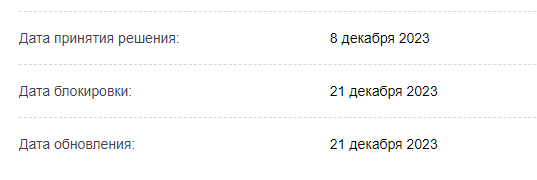

| Ник | Пост | Дата |
|---|---|---|
| dartraiden(Alexander Gavrilov) | Заблокирован 18 октября 2024 за размещение информации о способах обхода блокировок. Блокировка наблюдается преимущественно у проводных провайдеров. Блокировка снята вечером 21 октября, подробности ниже в теме. | 2024-10-18T15:45:15.652Z |
| Anyuta1166 | На Билайне отображается заглушка провайдера, значит блокировка на уровне провайдеров, а не на ТСПУ. | 2024-10-18T16:24:08.967Z |
| NHLAvalanche | До 18:00 на местном провайдере открывалось нормально, сейчас у мтс блокируется с вполне нейтральным ERR_CONNECTION_RESET, безо всяких заглушек провайдера. | 2024-10-18T16:48:59.621Z |
| TesterTi(TesterIt) | Мегафон, пока доступен | 2024-10-18T17:08:15.183Z |
| dartraiden(Alexander Gavrilov) |
Заглушку, скорее всего, видят те, кто испольует DNS провайдера (или использует нешифрованные DNS, а провайдер перехватывает трафик по 53 порту). Им отдаётся IP-адрес заглушки вместо адреса борды, в результате по HTTPS будет стандартная браузерная ошибка несоответствия сертификата с возмозжностью проигнорировать и увидеть заглушку, а по HTTP сразу откроется заглушка. Это первый рубеж блокировок, который снимает часть нагрузки с DPI провайдера - абонент сразу посылается, и не нужно анализировать SNI. У дом.ру домен как раз резолвится в поддельный адрес: https://1whois.ru/index.php?url=188.186.146.207 | 2024-10-18T17:10:12.240Z |
| uwu(uwu) | на билайне заглушка только по http | 2024-10-18T17:20:34.109Z |
| censorliber | Заблокировано https://rknweb.ru/blocked/805795/  | 2024-10-18T17:22:35.749Z |
| RandomInternetUser(-) | Учитывая наличие темы, например, GDPI на форуме, нельзя сказать, что это вызывает удивление. | 2024-10-18T17:24:08.243Z |
| RandomInternetUser(-) | Тут адрес не тот. Правильный - https://forum.ru-board.com. | 2024-10-18T17:26:36.146Z |
| censorliber | А ну да, его уже блокировали пару раз. Они просто домен меняют - думаю в этот раз аналогично будет. | 2024-10-18T17:27:12.020Z |
| krial(Krial) |
у меня http на домру по DOT пока доступен, а вот https срезали | 2024-10-18T17:29:08.043Z |
| dartraiden(Alexander Gavrilov) | Руборд никогда не менял домен. | 2024-10-18T17:30:28.856Z |
| dartraiden(Alexander Gavrilov) | Домен появился в выгрузке, блокировка за обсуждение способов обхода блокировок. | 2024-10-18T17:31:17.504Z |
| dartraiden(Alexander Gavrilov) | Блокировали раньше, но за несколько дней администрация добилась разблокировки. | 2024-10-18T17:32:55.227Z |
| denium | Вот и до патриотов добрались. | 2024-10-18T18:15:32.049Z |
| denium |
Забавно, что сайт доступен по HTTP, без принудительного HTTPS. Ничто не мешало заблокировать конкретные темы по маске и не ломать патриотам остальное общение. Совсем РКН работать разучился или отвык уже, что сайты бывают не только HTTPS. | 2024-10-18T18:17:25.196Z |
| dartraiden(Alexander Gavrilov) |
Мешало то, что большинство ходит туда по HTTPS. | 2024-10-18T18:26:20.354Z |
| denium | Так, HTTPS понятное дело заблокировать, HTTP оставить (кроме некоторых тем). Сейчас и по HTTP заглушка провайдера. HSTS у сайта нет. | 2024-10-18T18:27:59.048Z |
| dartraiden(Alexander Gavrilov) | На самой борде сообщали, что по HTTP с некоторых провайдеров ресурс доступен. | 2024-10-18T18:42:31.710Z |
| Nocturnal-ru(Roman) | да, по http пока открывается, но не везде | 2024-10-19T22:26:54.229Z |
| dartraiden(Alexander Gavrilov) | Убрали из реестра и из выгрузки (администрация переместила проблемные темы в раздел, доступ к которому ограничен для незарегистрированных) | 2024-10-21T21:56:20.088Z |
| denium | Это в какой? Я думал они просто затёрли некоторые темы. | 2024-10-22T01:04:08.807Z |
| dartraiden(Alexander Gavrilov) | Если нажать “редактировать” в тех темах, то будет видна ссылка на новое место. | 2024-10-22T01:11:51.440Z |
| denium | Спс. Всё время забываю о такой хитрости. Думаю, мало кто об этой фиче знает. | 2024-10-22T03:24:22.218Z |
| dartraiden(Alexander Gavrilov) | 2024-10-22T08:04:51.367Z |